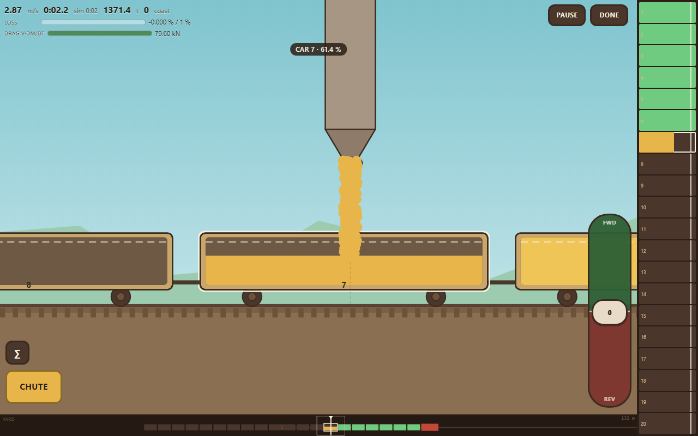
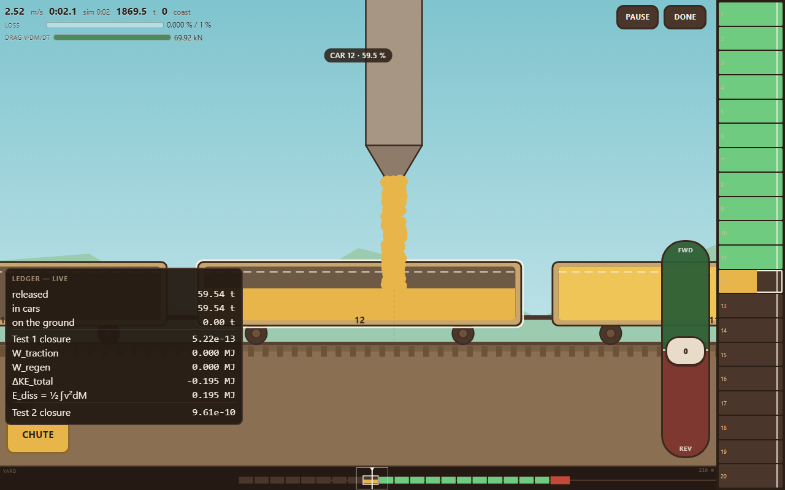
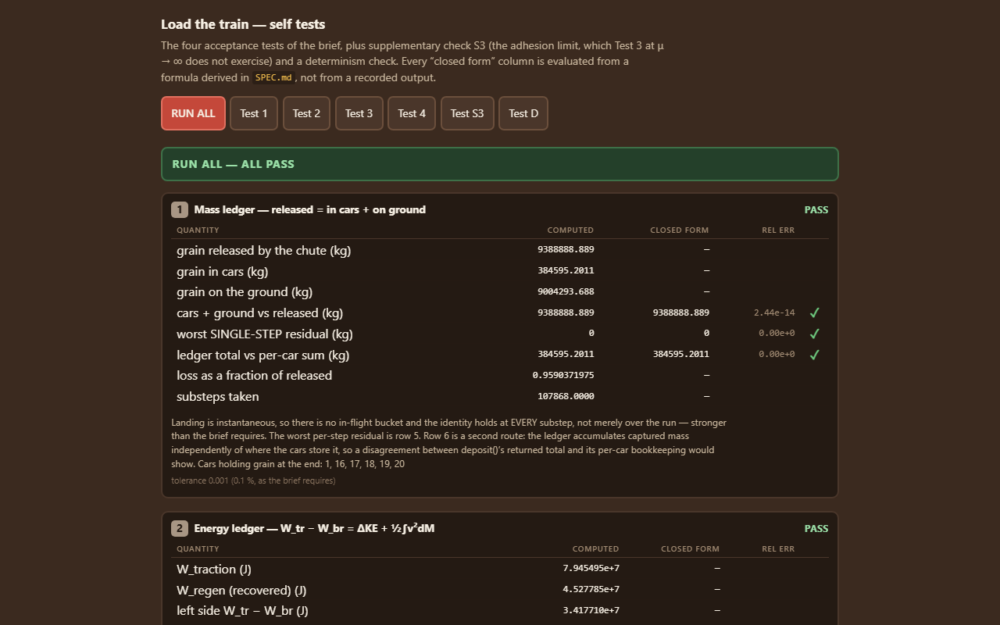

Project 1 · Basic Skills for Experimentalists · TIGP 2026
Drive a locomotive and twenty hopper cars under a grain chute and fill them. The catch is the physics: grain leaves the chute with no forward speed, so every tonne you load has to be dragged up to the speed of the train — and the train pays for it. The cargo is the thing slowing you down.

v·dM/dt — the whole point of the game, shown live.A locomotive and twenty open-top grain hoppers start thirty metres short of a fixed loading chute. You move the train; the chute does not move. You open and shut the chute as each car passes under it.
It is a pass only if every one of the twenty cars ends at 90 % or more and total grain loss stays under 1 % of what the chute released. Passing runs are ranked by elapsed time.
One HTML file. No build step, no dependencies, no network requests — it runs from a local file as happily as from the web.
The usual way to write this simulation is to integrate velocity and then bolt on a retarding force for the loading. That way invites a well-known factor-of-two error. This one integrates momentum instead:
p = Mv dp/dt = F_tractionGrain arrives with zero forward speed, so the variable-mass law has no extra term in it
at all. The retarding force v·dM/dt is never written down anywhere in
the code — it emerges when velocity is recovered as p/M. The
mass is added after the mechanical update, which is the perfectly-inelastic-collision
picture: momentum is untouched, so velocity drops, and exactly ½v²dm
of kinetic energy disappears into the grain. That is where the factor of two lives.

Neither was designed in; both fall out of the parameters.
terminal speed under load √(P/ḿ) = 6.00 m/s
speed at which a car still reaches 90 % in one pass = 4.78 m/sThe first is larger than the second, and that is the entire difficulty. At full power the locomotive outruns the chute: it settles at 6.2 m/s and loads each car to only 70 %. Holding the throttle down does not work. You have to sit the train in a narrow band of speed and shut the chute over every one of the nineteen coupling gaps — at 4.8 m/s each gap is a 0.31 s window, and missing them costs more than the 1 % loss budget allows.
Four acceptance tests were specified before the code was written, plus two more of our own. Every “closed form” column is evaluated from a formula derived in the specification — never from a recorded output — so a test cannot be quietly fitted to whatever the program happens to do.

| Test | What it closes | Worst relative error (tolerance 10−3) |
|---|---|---|
| 1 | Mass ledger — released = in cars + on the ground | 2.4×10−14 |
| 2 | Energy ledger —
W_tr − W_br = ΔKE + ½∫v²dM |
8.3×10−10 |
| 3 | Constant power from rest, against the closed form | 3.5×10−10 |
| 4 | Coasting accretion — Mv constant |
5.9×10−9 |
| S3 | The adhesion limit, against an exact piecewise solution | 1.6×10−10 |
| D | Determinism — identical inputs, identical ledger | exact |
Test 1 holds at every substep, not merely over a whole run — stronger than was asked for. Test 3 runs with the adhesion limit switched off so that the closed form holds verbatim, which is exactly why S3 exists: something has to exercise the limit that governs every real launch.
Three parameters are deliberately unrealistic, and the game says so on its own opening screen rather than hiding it.
| Quantity | Realistic | Used | Why |
|---|---|---|---|
| Chute flow | 1 500–3 000 t/h | 100 000 t/h | At a real rate the accretion drag is 75 N against a 710 t train — invisible. |
| Rated power | 2–4.5 MW | 1 MW | The whole game is low-speed shunting; there is no line haul to do. |
| Approach | 1 km | 30 m | A kilometre was a minute of holding full power and nothing else. |
Everything else — 150 t locomotive, 100 t cars, 0.30 wheel–rail
adhesion, g = 9.80665 m/s² — is real. There is no fudge factor in
the loss model either: grain missing a car is the overlap integral of the chute aperture
with the open trough, and nothing else.